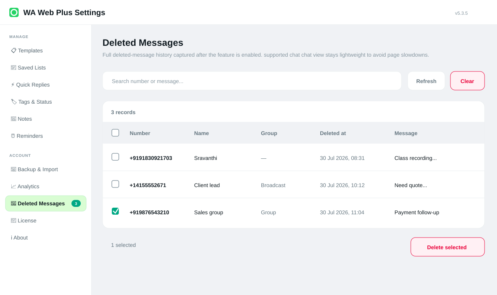

Sender context
See who the captured deleted message came from.
Deleted-message history
When enabled, WA Web Plus keeps local deleted-message history so teams can review sender, group, deleted time, and message context from Settings.

Workflow
Deleted-message history should be understandable, local, and easy to clean up.
See who the captured deleted message came from.
Know whether the message came from a group or one-to-one chat.
Review when the deletion was captured.
Use the extension settings area for review instead of scattered chat memory.
Delete records you no longer need.
History is intended for browser-side review after the feature is enabled.
Use the feature only when your workflow needs deleted-message review.
Check sender, chat, time, and message context in one place.
Remove rows you no longer need to retain in the browser.
Guide
Deleted-message history is sensitive. WA Web Plus presents it as a local-first feature and gives users a way to clean records from Settings.
Ready
Install WA Web Plus and test deleted-message history intentionally.